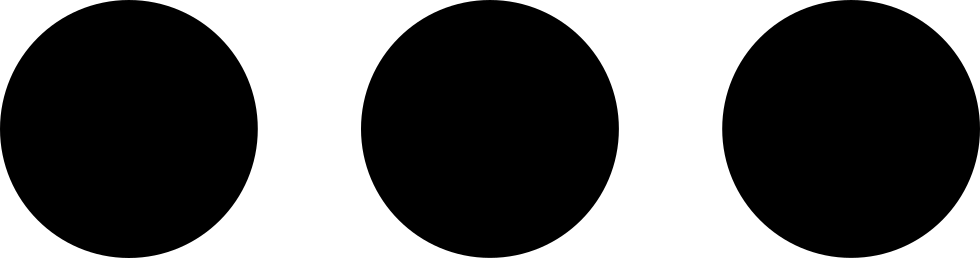

{{tweet.content.liked.name}} indicó que le gusta
{{tweet.content.liked.name}} indicó que le gusta {{tweet.content.retweetted.name}} lo retwitteó
{{tweet.content.retweetted.name}} lo retwitteó {{tweet.content.interest.name}} Retwitteaste
{{tweet.content.interest.name}} Retwitteaste
{{tweet.user.name}}
@{{tweet.user.username}}

{{tweet.content.text}}

{{getTime(tweet.content.date)}} · {{getDate(tweet.content.date)}}
{{tweet.content.retweets}} Retweets {{tweet.content.likes}} Me gusta